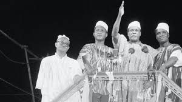

Kwame Nkrumah (born September 1909, Nkroful, Gold Coast [now Ghana]—died April 27, 1972, Bucharest, Romania) Ghanaian nationalist leader who led the Gold Coast’s drive for independence from Britain and presided over its emergence as the new nation of Ghana. He headed the country from independence in 1957 until he was overthrown by a coup in 1966.
EDUCATION
Early years
Kwame Nkrumah’s father was a goldsmith and his mother a retail trader. Baptized a Roman Catholic, Nkrumah spent nine years at the Roman Catholic elementary school in nearby Half Assini. After graduation from Achimota College in 1930, he started his career as a teacher at Roman Catholic junior schools in Elmina and Axim and at a seminary.Increasingly drawn to politics, Nkrumah decided to pursue further studies in the United States. He entered Lincoln University in Pennsylvania in 1935 and, after graduating in 1939, obtained master’s degrees from Lincoln and from the University of Pennsylvania. He studied the literature of socialism, notably Karl Marx and Vladimir Lenin, and of nationalism, especially Marcus Garvey, the Black American leader of the 1920s. Eventually, Nkrumah came to describe himself as a “nondenominational Christian and a Marxist socialist.” He also immersed himself in political work, reorganizing and becoming president of the African Students’ Organization of the United States and Canada. He left the United States in May 1945 and went to England, where he organized the 5th Pan-African Congress in Manchester.
FAMILY
Kwame Nkrumah married Fathia Nkrumah in 1957. They were blessed with three children; Gamal, Samia and Sekou. Kwame Nkrumah died in Bucharest, Romania, at age 62 on April 27, 1972, while battling cancer. Fathia, on the other hand, died on May 31, 2007, at Badrawy Hospital in Cairo due to a stroke.
WORK LIFE
in the Gold Coast, J.B. Danquah had formed the United Gold Coast Convention (UGCC) to work for self-government by constitutional means. Invited to serve as the UGCC’s general secretary, Nkrumah returned home in late 1947. As general secretary, he addressed meetings throughout the Gold Coast and began to create a mass base for the new movement. When extensive riots occurred in February 1948, the British briefly arrested Nkrumah and other leaders of the UGCC.
When a split developed between the middle-class leaders of the UGCC and the more radical supporters of Nkrumah, he formed in June 1949 the new Convention Peoples’ Party (CPP), a mass-based party that was committed to a program of immediate self-government. In January 1950, Nkrumah initiated a campaign of “positive action,” involving nonviolent protests, strikes, and noncooperation with the British colonial authorities.
POLITICS
When a split developed between the middle-class leaders of the UGCC and the more radical supporters of Nkrumah, he formed in June 1949 the new Convention Peoples’ Party (CPP), a mass-based party that was committed to a program of immediate self-government. In January 1950, Nkrumah initiated a campaign of “positive action,” involving nonviolent protests, strikes, and noncooperation with the British colonial authorities.In the ensuing crisis, services throughout the country were disrupted, and Nkrumah was again arrested and sentenced to one year’s imprisonment. But the Gold Coast’s first general election (February 8, 1951) demonstrated the support the CPP had already won. Elected to Parliament, Nkrumah was released from prison to become leader of government business and, in 1952, prime minister of the Gold Coast.Ghana became an independent state within the British Commonwealth. In in March 1957, Nkrumah became the new nation’s first prime minister. In 1958 Nkrumah’s government legalized the imprisonment without trial of those it regarded as security risks.
PRESIDENCY TENURE
By a plebiscite of 1960 Ghana became a republic and Nkrumah became its president, with wide legislative and executive powers under a new constitution.The attempted assassination of Nkrumah at Kulugungu in August 1962—the first of several—led to his increasing seclusion from public life and to the growth of a personality cult, as well as to a massive buildup of the country’s internal security forces. Early in 1964 Ghana was officially designated a one-party state, with Nkrumah as life president of both nation and party. While the administration of the country passed increasingly into the hands of self-serving and corrupt party officials, Nkrumah busied himself with the ideological education of a new generation of Black African political activists. Meanwhile, the economic crisis in Ghana worsened and shortages of foodstuffs and other goods became chronic. On February 24, 1966, while Nkrumah was visiting Beijing, the army and police in Ghana seized power. Returning to West Africa, Nkrumah found asylum in Guinea, where he spent the remainder of his life. He died of cancer in Bucharest in 1972.
 Kwame Nkrumah (born September 1909, Nkroful, Gold Coast [now Ghana]—died April 27, 1972, Bucharest, Romania) Ghanaian nationalist leader who led the Gold Coast’s drive for independence from Britain and presided over its emergence as the new nation of Ghana. He headed the country from independence in 1957 until he was overthrown by a coup in 1966.
Kwame Nkrumah (born September 1909, Nkroful, Gold Coast [now Ghana]—died April 27, 1972, Bucharest, Romania) Ghanaian nationalist leader who led the Gold Coast’s drive for independence from Britain and presided over its emergence as the new nation of Ghana. He headed the country from independence in 1957 until he was overthrown by a coup in 1966.
 Kwame Nkrumah married Fathia Nkrumah in 1957. They were blessed with three children; Gamal, Samia and Sekou. Kwame Nkrumah died in Bucharest, Romania, at age 62 on April 27, 1972, while battling cancer. Fathia, on the other hand, died on May 31, 2007, at Badrawy Hospital in Cairo due to a stroke.
Kwame Nkrumah married Fathia Nkrumah in 1957. They were blessed with three children; Gamal, Samia and Sekou. Kwame Nkrumah died in Bucharest, Romania, at age 62 on April 27, 1972, while battling cancer. Fathia, on the other hand, died on May 31, 2007, at Badrawy Hospital in Cairo due to a stroke.
 in the Gold Coast, J.B. Danquah had formed the United Gold Coast Convention (UGCC) to work for self-government by constitutional means. Invited to serve as the UGCC’s general secretary, Nkrumah returned home in late 1947. As general secretary, he addressed meetings throughout the Gold Coast and began to create a mass base for the new movement. When extensive riots occurred in February 1948, the British briefly arrested Nkrumah and other leaders of the UGCC.
When a split developed between the middle-class leaders of the UGCC and the more radical supporters of Nkrumah, he formed in June 1949 the new Convention Peoples’ Party (CPP), a mass-based party that was committed to a program of immediate self-government. In January 1950, Nkrumah initiated a campaign of “positive action,” involving nonviolent protests, strikes, and noncooperation with the British colonial authorities.
in the Gold Coast, J.B. Danquah had formed the United Gold Coast Convention (UGCC) to work for self-government by constitutional means. Invited to serve as the UGCC’s general secretary, Nkrumah returned home in late 1947. As general secretary, he addressed meetings throughout the Gold Coast and began to create a mass base for the new movement. When extensive riots occurred in February 1948, the British briefly arrested Nkrumah and other leaders of the UGCC.
When a split developed between the middle-class leaders of the UGCC and the more radical supporters of Nkrumah, he formed in June 1949 the new Convention Peoples’ Party (CPP), a mass-based party that was committed to a program of immediate self-government. In January 1950, Nkrumah initiated a campaign of “positive action,” involving nonviolent protests, strikes, and noncooperation with the British colonial authorities.
 When a split developed between the middle-class leaders of the UGCC and the more radical supporters of Nkrumah, he formed in June 1949 the new Convention Peoples’ Party (CPP), a mass-based party that was committed to a program of immediate self-government. In January 1950, Nkrumah initiated a campaign of “positive action,” involving nonviolent protests, strikes, and noncooperation with the British colonial authorities.In the ensuing crisis, services throughout the country were disrupted, and Nkrumah was again arrested and sentenced to one year’s imprisonment. But the Gold Coast’s first general election (February 8, 1951) demonstrated the support the CPP had already won. Elected to Parliament, Nkrumah was released from prison to become leader of government business and, in 1952, prime minister of the Gold Coast.Ghana became an independent state within the British Commonwealth. In in March 1957, Nkrumah became the new nation’s first prime minister. In 1958 Nkrumah’s government legalized the imprisonment without trial of those it regarded as security risks.
When a split developed between the middle-class leaders of the UGCC and the more radical supporters of Nkrumah, he formed in June 1949 the new Convention Peoples’ Party (CPP), a mass-based party that was committed to a program of immediate self-government. In January 1950, Nkrumah initiated a campaign of “positive action,” involving nonviolent protests, strikes, and noncooperation with the British colonial authorities.In the ensuing crisis, services throughout the country were disrupted, and Nkrumah was again arrested and sentenced to one year’s imprisonment. But the Gold Coast’s first general election (February 8, 1951) demonstrated the support the CPP had already won. Elected to Parliament, Nkrumah was released from prison to become leader of government business and, in 1952, prime minister of the Gold Coast.Ghana became an independent state within the British Commonwealth. In in March 1957, Nkrumah became the new nation’s first prime minister. In 1958 Nkrumah’s government legalized the imprisonment without trial of those it regarded as security risks.